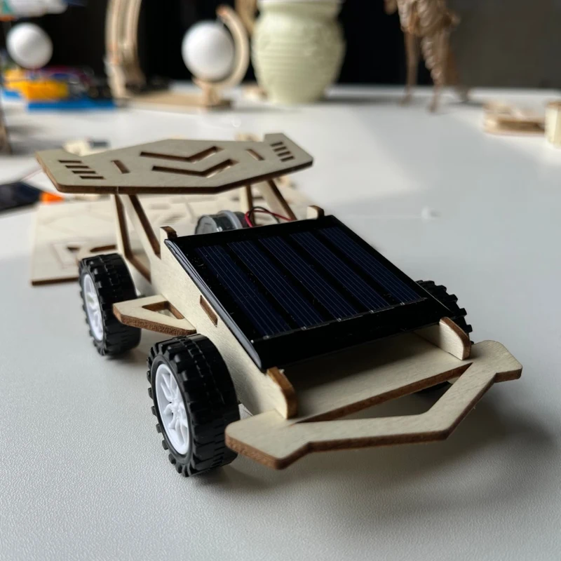
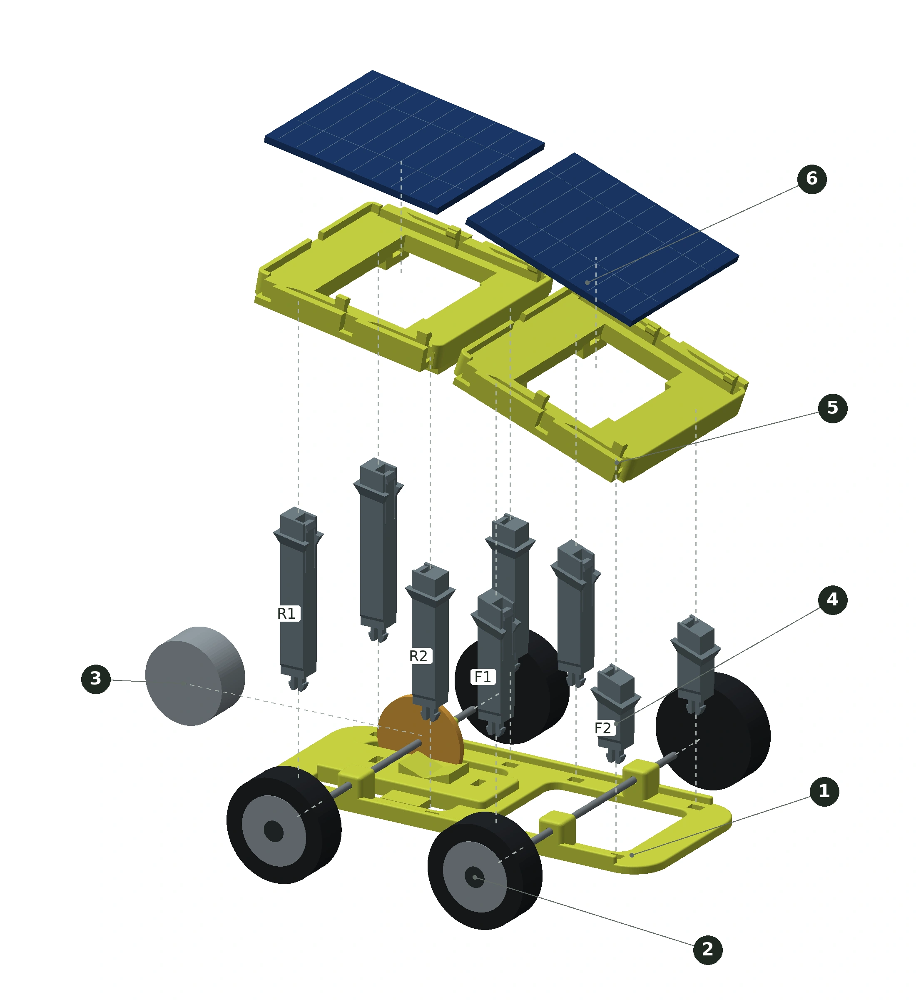

两块面板，两种倾角
前面板倾斜 20°，后面板倾斜 10°。后面板的中心比前面板高 15 毫米。
实车演示
组装完成的小车实际行驶视频。
点击后才会加载 YouTube 播放器。 在 YouTube 上观看
家庭制作 / 3D 打印 / 太阳能
两块太阳能板、一个小电机，
还有在家打印的零件。
我们设计结构、测试配合、组装小车，终于让它跑了起来。现在，你也可以动手制作。
已组装并成功运行 2026 年 11 月

工作原理
太阳能板为电机供电，齿轮带动车轴旋转，车轮让小车前进。打印的结构件将这些部件连接在一起。

前面板倾斜 20°，后面板倾斜 10°。后面板的中心比前面板高 15 毫米。
电机托座与底盘为一体结构，用扎带固定电机。齿轮中心距通过打印测试件进行选择。
八根笔直的支柱连接底盘与框架。每根支柱两端均带有一体式卡扣，无需额外的螺钉或楔块。
我们使用的套件
车轮、电机、齿轮和太阳能板来自木制太阳能小车套件。下面就是本项目实际使用的套件。

每辆小车需要 2 套
STEM Kits for Kids Ages 8-10-12-14, Solar Cars
每套只有一块太阳能板，本项目需要两块。使用两块板，以及一台电机、四个车轮、两根车轴和一对配套齿轮。另一套传动零件可以留作备用。
请选择“Solar car”款式。木制底盘由打印的 V2.10 底盘和 BF5 支架替代。
在 Temu 查看套件 ↗这是制作者提供的实际购买商品链接。不同国家的商品页面及配送选项可能不同。
以下是替代零件的商品直达链接，尚未在本车上测试。下单前请核对下列尺寸和电气兼容性。
1 台电机
卖家尺寸图标注机身 Ø24.3 × 12.4 mm，外露轴长 6.2 mm，比本项目实测的 Ø24 × 12 mm 电机略大。请核对安装座配合、齿轮安装与啮合，以及太阳能板能否驱动电机。不含齿轮。
在 AliExpress 查看电机 ↗需要 4 个车轮和 2 根车轴
标称车轮尺寸 Ø30 × 10 mm，适配 2 mm 轴。每包包含 8 个车轮和 4 根 Ø2 × 100 mm 钢轴。使用四个车轮和两根轴，将轴裁至适合车体的长度。
在 Temu 查看车轮和车轴 ↗需要 2 块太阳能板 · 每包 5 块
标称 55 × 55 mm、2 V，带导线。未注明厚度；本项目边框适配 2 mm 厚的板。请确认厚度、边缘留白及电机兼容性。卖家为 MSL Solar Company Store。
在 AliExpress 查看太阳能板 ↗还需要两根 Ø2 mm 车轴、一对配套齿轮、导线和 4 mm 宽扎带。请沿用套件齿轮：已测试的轴心距为 15.00 mm，电机小齿轮为 10 齿。大齿轮齿数和原有电气参数未记录，因此完整的替代传动系统尚未验证。
从模型到实物
爆炸图展示最终发布的 V2.10 底盘和 BF5 支架。先组装传动系统，再固定空边框，最后装太阳能板。

电机安装座和车轴支座已集成在底盘中。
四个车轮装在两根 Ø2 mm 车轴上，大齿轮装在后轴上。
将电机放入安装座，对齐齿轮，并用 4 mm 宽扎带固定。
F1、F2、R1、R2 各两根。F 为前框，R 为后框；1 型位于每个框的后缘，2 型位于前缘。
从下方插入立柱，上端卡舌朝向中央开口。再将立柱下端扣入底盘。
导线穿过边框开口。确认所有立柱锁定后，再安装太阳能板。
打印件采用已发布的 CAD 几何形状。外购零件为简化示意，未显示齿轮齿形、导线和扎带。本图说明机械装配，不是接线图。
一个底盘、两个框架和八根支柱。请在切片软件中自行选择打印方向和支撑；STL 文件不含预制支撑。
安装车轴、车轮和齿轮。将电机放入托座，并用扎带固定。
从下方将立柱插入空边框。逐个扣入底盘，并在立柱附近按压。穿好导线后，最后安装太阳能板。
检查车轮是否转动顺畅，然后让小车跑起来。这是整个制作过程中最有成就感的一刻。
动手制作
这里汇集了所有当前版本的模型。
打印零件、修改设计，制作你自己的太阳能小车。
| 零件 | 文件 | 数量 |
|---|---|---|
| 带电机托座的底盘 | solar-car-chassis-v2_10.stl | 1 |
| 前框架 | solar-car-bf5-F-frame.stl | 1 |
| 后框架 | solar-car-bf5-R-frame.stl | 1 |
| 前支柱 F1 / F2 | solar-car-bf5-F1-post.stl / F2-post.stl | 每种 2 个 |
| 后支柱 R1 / R2 | solar-car-bf5-R1-post.stl / R2-post.stl | 每种 2 个 |
外购零件见上方“零件采购”部分。本项目使用两套套件中的两块太阳能板，以及一台电机、四个车轮、两根车轴、齿轮、导线和一根扎带。
压缩包中还包含框架和支柱的组合打印布局。请选择组合布局或独立零件其中一种，避免重复打印。所有尺寸均以毫米为单位，请按 100% 比例打印。
底盘 V2.10 · 面板支架 BF5 · 制作者已确认组装后的小车可以运行。配合效果取决于打印机和所用配件。